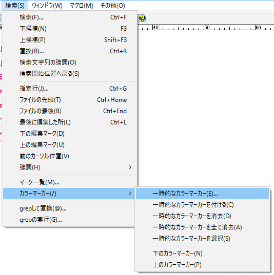
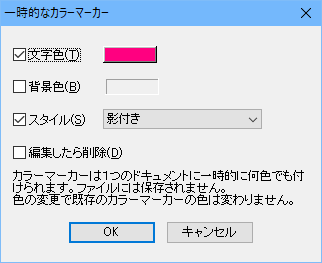
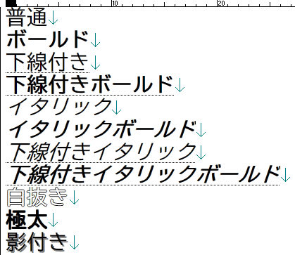
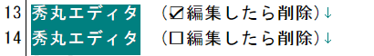
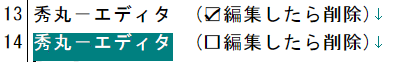

秀丸エディタ Ver.7.00以降では「カラーマーカー」が使用可能です。 (Ver.7.00ではマクロからしか使えませんでしたが、Ver.8.00からダイアログが追加され、メニューから操作可能になりました)
エディタ画面上で任意の箇所にマーキングできます。ただし、一時的なものなので、マーキングした状態が保存される事はありません。ファイルを閉じた時点で消去され、再度ファイルを開いてもマーキングした状態には復帰しません。
また、カラーマーカーと検索と組み合わせると、検索にマッチする箇所を限定させる事が出来ます。 (「第II部〜知っていると便利な秀丸の機能 検索」にある「追加の条件」を参照)
直接ではありませんが、「すべて検索-色付け」や、「他の秀丸エディタと内容比較」も内部的にカラーマーカーを使用しています。
カラーマーカーを使うには、マーカーを付ける範囲を選択します。 (通常の選択でも、箱形選択でも、複数選択でもかまいません)
「検索」メニューから「カラーマーカー」−「一時的なカラーマーカー」を選ぶと、「一時的なカラーマーカー」のダイアログが表示されます。


カラーマーカーで設定できるのは、「文字色」「背景色」「スタイル」です。「編集したら削除」はカラーマーカーを付けた部分を編集した場合に、カラーマーカーを削除するかどうかの設定です。
「文字色」「背景色」は、色を指定します。色を付ける場合はチェックし、横にあるボタンで色を選択します。チェックしない場合は、色は設定されません。
スタイルは以下の設定が可能です。

「編集したら削除」は、カラーマーカーをつけた箇所を編集した場合の動作を設定します。
同じ内容で、上の行は「編集したら削除」が有効、下の行は「編集したら削除」が無効に設定しています。

箱形選択して「秀丸」と「エディタ」の間に文字を挿入します。

「編集したら削除」が有効な場合は、カラーマーカー自体が削除されます。「編集したら削除」が無効な場合は、追加した部分を含めカラーマーカーが維持されます。
「一時的なカラーマーカーを付ける」は、設定ダイアログを開かずに、前回と同じ設定でカラーマーカーをつけます。
「一時的なカラーマーカーを消去」は、選択範囲した部分にあるカラーマーカーを消します。
「一時的なカラーマーカー全て消去」は、エディタ上にある全てのカラーマーカーを消します。
「一時的なカラーマーカー選択」は、エディタ上にある全てのカラーマーカーを範囲選択します。複数箇所のカラーマーカーがある場合は、複数選択状態になります。
「下のカラーマーカー」「上のカラーマーカー」はカーソル位置を基準に、上または下にあるカラーマーカーの先頭部分に移動します。
カラーマーカーには、レイヤー(layer)が存在します。
メニューから操作する場合は、"名前なしのレイヤー"(デフォルトのレイヤー)に対しての操作になります。
レイヤーを指定して、カラーマーカーを操作するには、現状ではマクロを使用するしかありません。マクロを使用し、"名前なしのレイヤー"とは別のレイヤーにカラーマーカー付けた場合、メニューから操作するカラーマーカー関連のコマンドは無効です。 (メニューからの操作は、"名前なしのレイヤー"以外のカラーマーカーは対象にならない)
カラーマーカーの保存/復元は、本体の機能としては用意されていませんが、マクロで可能です。ライブラリ - 秀丸エディタ関連 - マクロライブラリで、探してみてください。